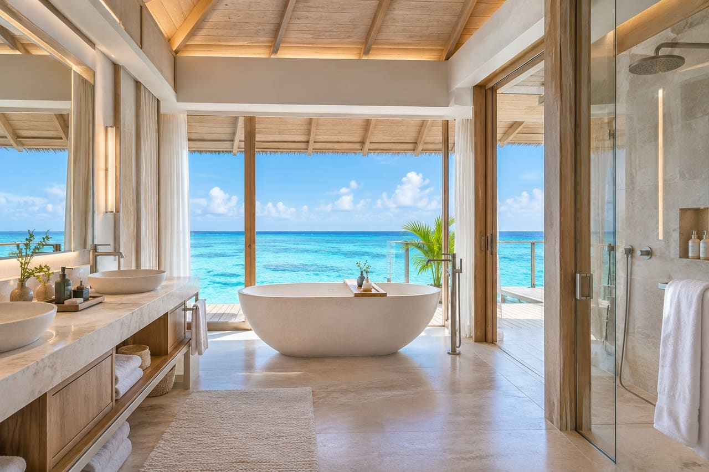
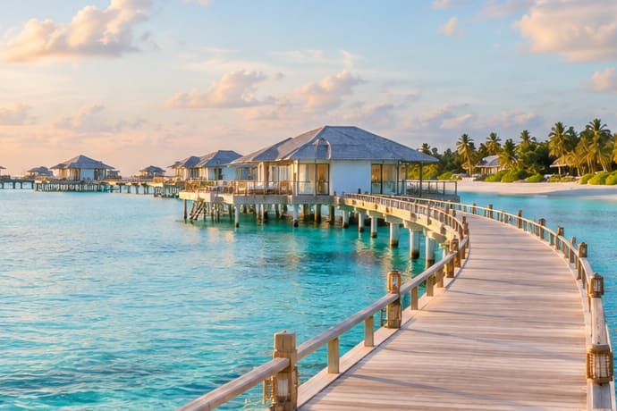

Overwater Villa
At the end of the boardwalk
Raised on stilts above the lagoon and reached on foot along the boardwalk. The timber deck looks straight out to sea, with steps down into the water. Inside, a stone bath faces the horizon.
- Setting
- Over the lagoon
- Outdoors
- Sundeck with steps into the water
- Inside
- Stone bath with a sea view
